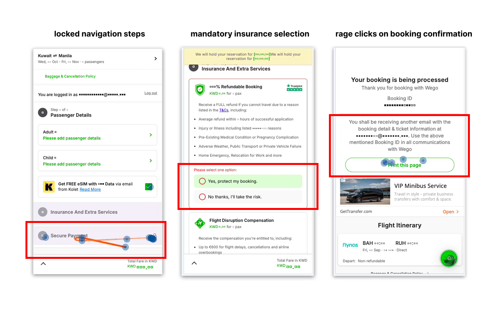

Diagnosing Why Flight Bookings Stalled at Checkout
Some details have been intentionally generalized or omitted due to confidentiality.
Opening context
Wego is a travel search and booking platform used across the Middle East and Asia.
Users were searching for flights and choosing options. But many dropped off before completing payment.
The funnel showed where users left. It could not explain why.
The research question
I focused on two questions:
- Where were users getting stuck inside checkout?
- Why did users trust Wego to search, but still book elsewhere?
How I investigated it
| Goal | Methods |
|---|---|
| Find checkout friction | Heatmaps, session recordings |
| Understand abandonment | Survey (250 users), rapid user calls |
| Compare against expectations | Competitive benchmarking, analytics, user reviews |
What I found
Finding 01
Users lost control inside checkout.
Several interactions behaved differently from what users expected.
Users got stuck at the insurance step because they did not realize a selection was mandatory. Others tried to go back and edit earlier steps, but the flow locked them in. After booking, many rage-clicked the confirmation page trying to download proof of purchase.
The friction was consistent across English and Arabic users.

Finding 02
Users trusted Wego before payment. Not after it.
Price was the biggest reason users came to Wego. It was also the biggest reason they left.
Users described prices changing during checkout, unexpected fees appearing late, uncertainty around refunds and cancellations, and difficulty getting support after payment.
The issue was bigger than pricing. Users did not feel confident about what would happen once money was involved.
| Experience | Before payment | After payment |
|---|---|---|
| Prices | Good prices | Refund anxiety |
| Search | Smooth search | Support frustration |
| Booking | Easy booking | Cancellation confusion |
| Trust | Trusted comparison | Pricing uncertainty |
Finding 03
Competitors already solved many of these trust problems.
Other travel platforms offered clearer pricing, more flexible cancellations, and stronger post-booking reassurance.
Wego performed well at helping users search. The confidence dropped after checkout began.
| Experience | Wego | Competitors |
|---|---|---|
| Pricing transparency | Partial | Strong |
| Cancellation flexibility | Limited | Common |
| Post-booking support | Weak | Strong |
| Payment flexibility | Limited | Common |
What changed
| Product change | Triggered by |
|---|---|
| Insurance step redesigned | Rage click analysis |
| Checkout flow made editable | Navigation friction findings |
| Self-service cancellation prioritized | Survey + user feedback |
| Pricing transparency became strategic focus | Funnel abandonment research |
Reflection
If I did this again, I would add an intercept survey at key checkout drop-off points to capture what users felt and intended in the moment.
This would help connect observed behavior from session recordings with users' actual reasons for leaving — and I raised this with the PM as a potential next step.